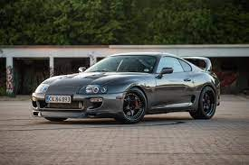
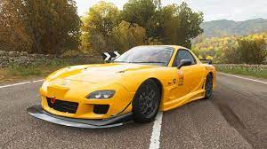
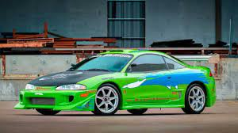

Sobre o Site
Esse site é sobre carros japoneses (JDM)
Toyota, Nissan, Subaru e Honda são ótimos exemplos de marcas de JDM
Toyota Supra
Toyota Supra (em japonês: トヨタ・スープラ, Hepburn: Toyota Sūpura) é um automóvel desportivo produzido pela fabricante japonesa Toyota entre 1978 e 2002, e desde 2019 até o presente. O nome "Supra" é derivado do prefixo latino, que significa "acima", "ultrapassar" ou "ir além".[1] O Supra possui linhas agressivas e um aerofólio para gerar sustentação negativa e dar mais esportividade ao design do carro. O Supra é equipado com muita tecnologia, dispõe de controle de tração e uma excelente capacidade de frenagem.
-
Wiki Toyota Supra
Mazda Rx7
O Mazda RX-7 é um automóvel desportivo produzido pela empresa japonesa Mazda entre 1978 e 2002. Possui tração traseira e motor de até 280 cavalos de potência. Apesar de a Mazda ter parado de fabricá-lo, ainda é possível vê-lo em alguns salões de automóveis, jogos eletrônicos (como Need for Speed) e é frequentemente visto nas ruas do Japão.
Três modelos foram produzidos: SA/FB, FC3S e o mais famoso, FD3S. É um dos poucos carros a empregar o motor rotativo Wankel, que dispensa os tradicionais pistões, árvores de cames, cambota, etc.
Este tipo de motor tem muito menos componentes, mas possui uma potência específica superior.
Mitsubishi Eclipse
O esportivo Mitsubishi Eclipse foi fabricado pela Mitsubishi, Plymouth e a Chrysler,
que desenvolveram em conjunto. Para esse efeito, em 1985 a empresa Diamond Star Motors foi fundada.[1]
De acordo com a Mitsubishi Motors, o Eclipse foi batizado em homenagem a um cavalo de corrida inglês do século XVIII que havia vencido 26 corridas.[2]
O Eclipse foi vendido oficialmente no Japão, América do Norte, Oriente Médio, Coreia do Sul, Filipinas, Brasil e China. No final de agosto de 2011, o Eclipse final saiu da linha de montagem e foi leiloado, com os rendimentos doados para instituições de caridade.
Entre em Contato
Se você tiver alguma dúvida ou quiser compartilhar seu interesse pela história do Brasil, não hesite em nos contatar.